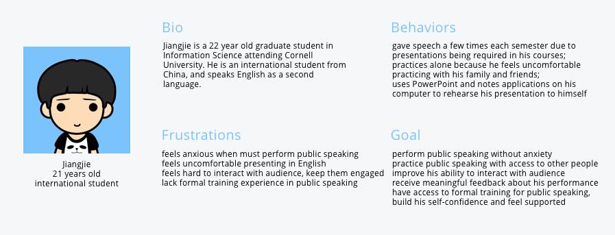
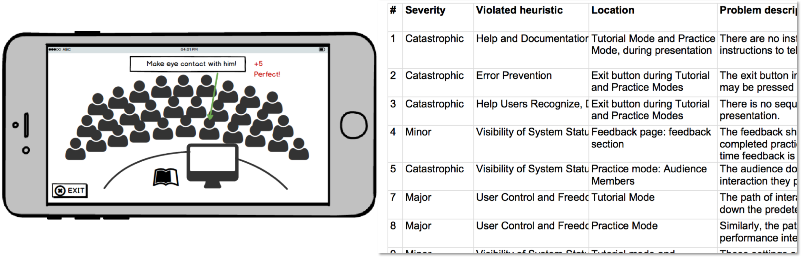

This is a semester-long project for class "Human Computer Interaction Design" and the theme is "Leveling the Playing Field".
Design Process
How we land on the people problem
After several rounds of discussion, we decided to design for people with public speaking anxiety. The target group now is college students with public speaking anxiety which our team will have easy access to.
After the interview session, our team worked together to analyze the information we collected with affinity diagram. With affinity diagram, we land on some findings about people with public speaking anxiety, a set of requirement statements we will follow in designing for user group and created a model that fits best our project.
Affinity Diagram & Social Model
Based on all the analysis and findings, we finally created our persona--Jiangjie
In order to solve the problem our persona is facing, each of us came up with 20 different solutions. After the presentation of each idea, instead of voting for one solution, we discussed for a long time, synthesized impressive parts of some designs into a final solution-- Immersive virtual reality.
How we land on our final solution
The virtual reality game will simulate a real public speaking environment. Users can gave speech to virtual audience and interact with them. The system will also teach the user how to give a perfect speech and give feedback to their performance. So there will be two modes: Training mode and practice mode. For training mode, choose a topic from the library and the system will give you step-by-step instructions. For practice mode, you can practice for your own presentations, the virtual audience will interact with you and the system will give you professional feedback and suggestions. For both modes, you can set venue and audience size to best suit users' needs. We used paper prototype to convey our design concept.
We conducted three user interviews with the paper prototypes
We used Balsamiq to create an interactive low-fidelity prototype. Then we used Heuristic Evaluation to find out our UX problems which we will fix when drawing the high-fidelity prototype.
We used Sketch 3 to design the high-fidelity prototype and used invision to create the interactive demo. After we finished the first version of hi-fi prototype, we conducted 5 deep user interviews for their opinions and made improvements according to the analysis results. The following is the final version of hi-fidelity ptototype.